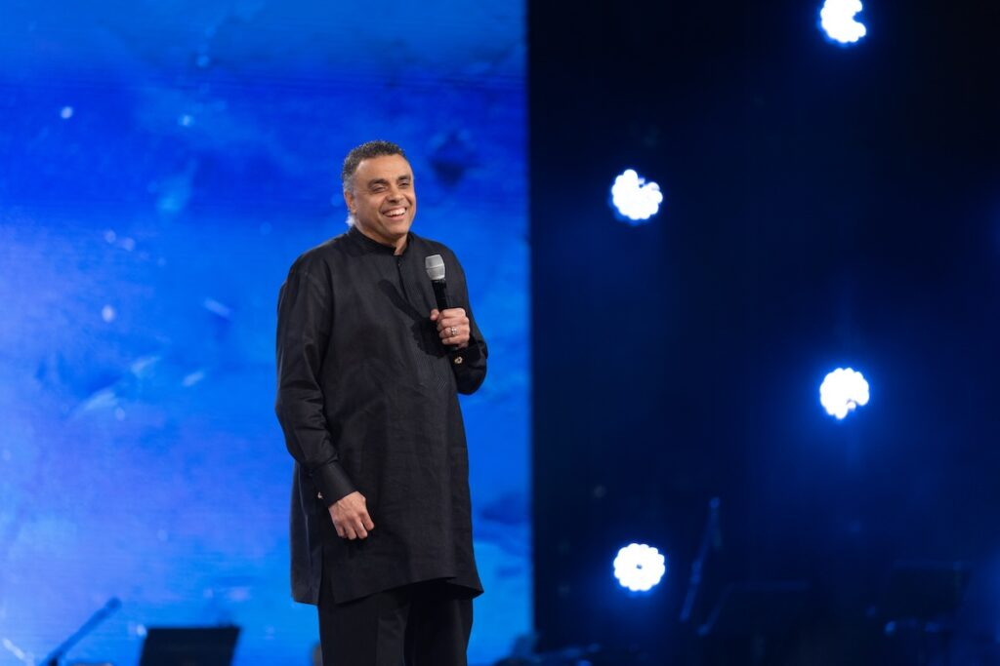
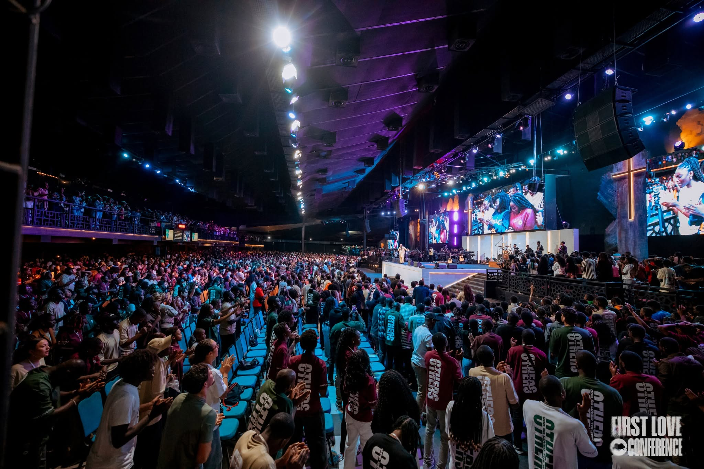

Présence
Rechercher une relation réelle avec Dieu, chaque jour.
Une maison pour revenir à l'essentiel
Une communauté vivante à Cocody, réunie par la foi, la présence de Dieu et l'amour du prochain.
First Love Church est une famille spirituelle qui place Jésus au centre. Nous créons un espace où chacun peut rencontrer Dieu, grandir dans sa foi et devenir une bénédiction pour sa génération.
Faire connaissance ↗Rechercher une relation réelle avec Dieu, chaque jour.
Célébrer avec une foi sincère et une joie contagieuse.
Servir notre ville avec générosité, excellence et compassion.

Dag Heward-Mills est l'auteur de « The Makarios », une collection comptant 130 titres, avec plus de 80 millions d'exemplaires publiés. La collection « The Makarios » répond aux besoins des pasteurs, des responsables d’Église et des fidèles. Ces best-sellers apportent des réponses à de nombreuses questions concernant l’appel de Dieu, l’onction, la croissance de l’Église, la loyauté et le ministère pastoral. Ils fournissent également des conseils pratiques pour le ministère, la direction d’Église et l’évangélisation. Ces ouvrages vous aideront à trouver des réponses à la question suivante : comment devenir un chrétien fort ? Dag Heward-Mills est le fondateur des « United Denominations », issues du « Lighthouse Group of Churches », qui compte actuellement plus de 7 649 églises réparties sur tous les continents. Il a enrichi le monde de la musique chrétienne de plus de 300 chants. Conférencier international, Dag Heward-Mills est également l’évangéliste international spécialisé dans la guérison au sein des « Healing Jesus Campaigns ».
Bishop Dag Heward Mills — Lead Pastor
Il y a une place pour vous. Venez comme vous êtes.

Un livret offert pour nourrir votre marche avec Dieu et raviver ce qui compte vraiment.
Télécharger le PDF ↓{kind=link}